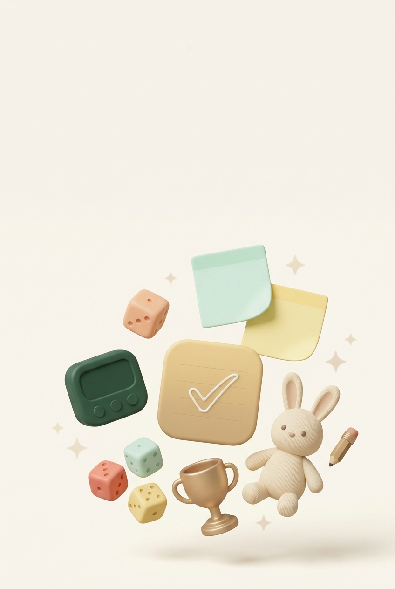
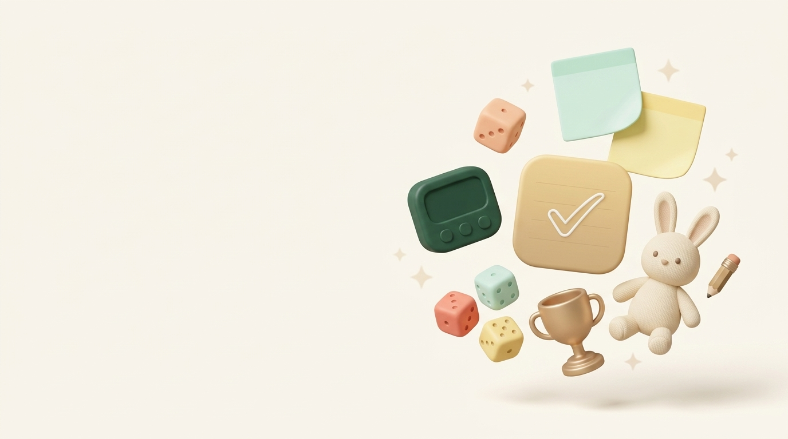

바탕화면 메모·할 일부터
타이머·뽑기·투표·자리 배치까지
프로그램 하나로 끝.
마감이 가까울수록 날짜 태그 색이 바뀌어요.
리마인더가 한 번 더 챙겨 드립니다.
포스트잇처럼 붙이고, 접고, 항상 위에.
다시 쓸 문구는 보관함에 모아 두고
필요할 때 꺼내 쓰세요.
타이머 4종·시계·주사위·집중벨·뽑기·투표…
필요한 도구만 골라 별도 창으로 꺼내고
전자칠판에 크게 띄우세요.
학급 명단에서 바로 뽑아요. 클래식·인형 뽑기·풍선 다트,
‘한 번씩 골고루’로 뽑힌 친구는 자동 제외!
한 명씩 숫자키로 투표하면 다음 친구 화면으로 자동 전환.
개표 방송·실시간 레이스로 두근두근 개표까지!
떨어져 앉기·앞자리 지정·지난 짝 반복 줄이기.
3·2·1 공개 연출과 PNG 저장까지 한 번에!
모둠 점수판으로 칭찬은 크게,
학급 온도계로 우리 반 목표는 함께 채워요.
화이트 보드 전체 화면으로 내일 준비물 안내.
우리 학교 급식과 알레르기 표시도 바로 확인!
15가지 테마와 다크 모드, 손글씨 글꼴까지.
책상 위 분위기를 마음대로 바꿔 보세요.

선생님을 위한 메모 + 교실 도구 12가지

메모·할 일 + 교실 도구 12가지
선생님의 하루를 한 프로그램에.